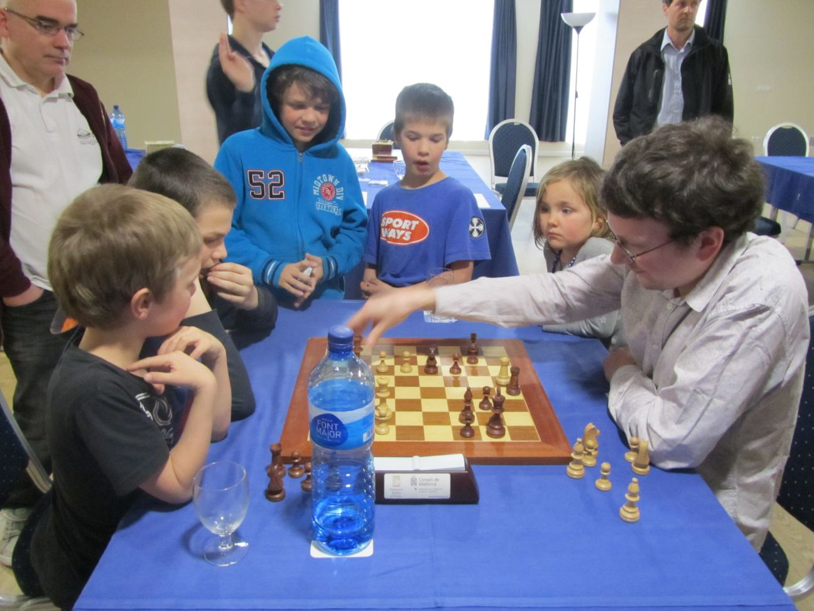
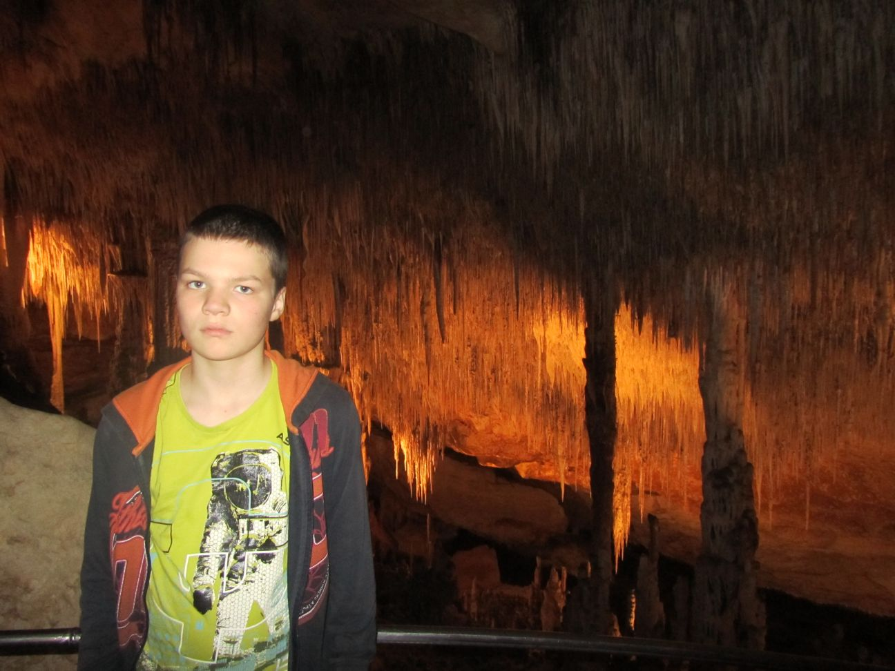

Mallorca
Dear people, This is my report from my tournament in Mallorca. At 21 March we went to our grandparents to sleep there for one night. The next day we had to wake up at 6:00 AM to go to Eindhoven airport. We had to fly for 3 hours and we landed at Mallorca. After that we went driving to Can Picafort, and as you already checked on google maps it was only 1 minute from the sea. The tournament started the same day at 8:30 PM. The tournament was in a closed room in the hotel, so it was only 1 minute walking from the appartment I was very tired and I lost in 20 moves from the tournament winner and little brother Jorden van Foreest. The next round I played against Peter Constenou(2280) He came from England but he could speak a little Dutch. We played a sharp game but he made a mistake to give a rook for a bishop and 2 pawns but it didn't turn out the way he wanted and I won pretty easily. The rounds started normally on 4:00 PM and we spend the time by looking to the nature of Mallorca. The hotel we slept was very nice, you could walk in and take candies from the reception, and there was internet. Food was good in the restaurant, it was free you could take as much as you like. There was also ICE-CREAM: I LIKE ICE-CREAM!!! Round 3 and 4 where double rounds and started at 10:00 AM and 16:00 PM, round 3 was a draw against 2304 and round 4 was a draw against 2258. The next day I played another draw so I became bored to tears. Round 6 I played very bad and lost. That day we walked a very long road and after 1 hour we were in the middle of nowhere with one water machine to buy water. Round 7 I won against 2043, the only weaker player in the tournament.  Playing chess, my brother Pieter watching. Round 8 I played against the strongest of the tournament and I made a mistake in the opening and after that he didn't give me a chance. Round 9 I played a draw against 2350, it was a boring game. End score: 4 out of 9 and I get 17 rating points for the Fide. The last day we went to a very big cave named Caves of the Drach with very much stalactites and other cool stuff. Here is a boring lecture about it: The Caves of Drach are four great caves that are located in the island of Majorca, Spain. They are in the municipality of Manacor, near the locality of Porto Cristo. They were first mentioned in a letter 1338.The caves extend to a depth of 25 m, reaching 2.4 km in length. The four caves, called Black Cave, White Cave, Cave of Luis Salvador, and Cave of the French, are connected to each other.  The caves The caves have formed by water being forced through the entrance from the Mediterranean Sea, and some researchers think the formation may date back to Miocene. There is an underground lake situated in the caves called Martel Lake, which is about 115 m in length and 30 m in width. It's named after the French explorer and scientist Edouard A Martel, who is considered the founding father of speleology (the study of caves). He was invited to explore the cave 1896. A German cave explorer, M.F. Will, had mapped the White and Black cave in 1880. Martel found two more caves, as well as the underground lake. The caves are open to the public and one of the main attractions on Mallorca. The visit ends with a short classical concert performed by four musicians on a boat. |